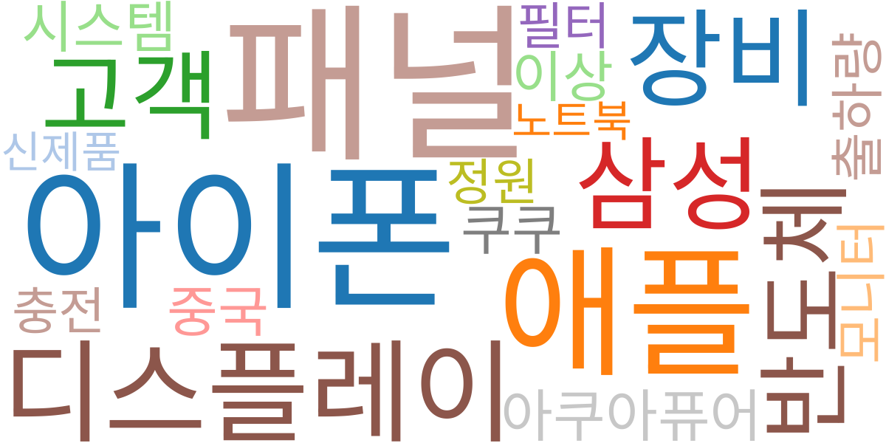
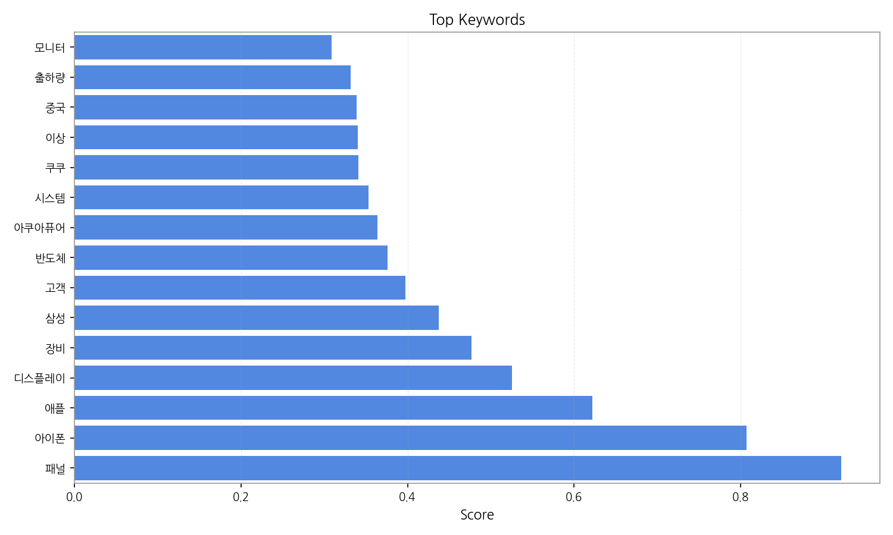
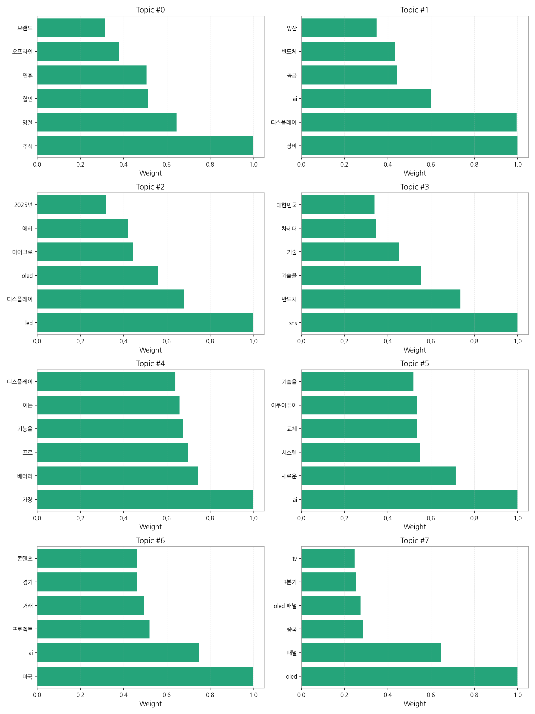
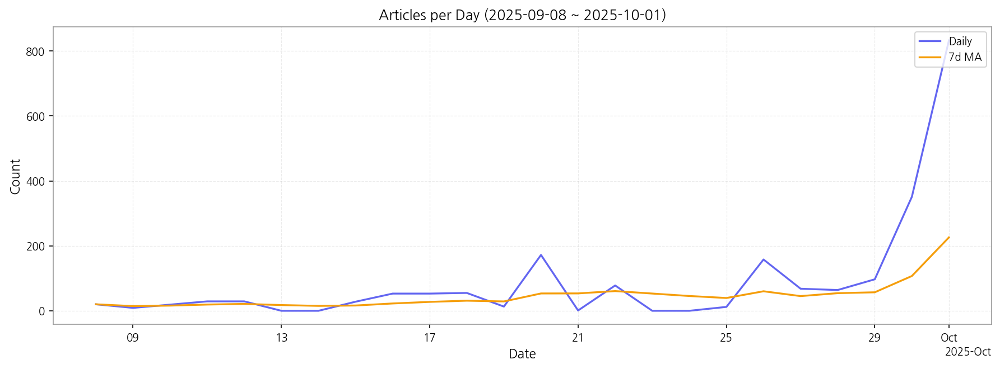

1. 핵심 맥락:
2. 최근 변화/스파이크:
3. 실무 인사이트:

| Rank | Keyword | Score |
|---|---|---|
| 1 | 패널 | 0.921 |
| 2 | 아이폰 | 0.807 |
| 3 | 애플 | 0.622 |
| 4 | 디스플레이 | 0.525 |
| 5 | 장비 | 0.477 |
| 6 | 삼성 | 0.438 |
| 7 | 고객 | 0.397 |
| 8 | 반도체 | 0.376 |
| 9 | 아쿠아퓨어 | 0.364 |
| 10 | 시스템 | 0.353 |
| 11 | 쿠쿠 | 0.341 |
| 12 | 이상 | 0.341 |
| 13 | 중국 | 0.339 |
| 14 | 출하량 | 0.332 |
| 15 | 모니터 | 0.309 |



1. 핵심 맥락:
2. 최근 변화/스파이크:
3. 실무 인사이트:
| Idea | Target | Value Prop | Score |
|---|---|---|---|
| AI 기반 디스플레이 공정 자동화 및 수율 개선 솔루션 | 국내외 디스플레이 패널 제조사 (LG디스플레이, 삼성디스플레이, BOE) | AI 기반 실시간 공정 데이터 분석 및 예측 모델을 통해 불량 발생 가능성을 사전에 감지하고 예방. 공정 자동화 및 최적화로 생산 효율성 향상 및 비용 절감. 경쟁사 대비 높은 수율 및 생산성 확보. | 4.50 |
| AI 기반 차량용 HUD 개인 맞춤형 솔루션 | 글로벌 완성차 OEM (Tier 1 부품사 협력) | AI 기반 시선 추적 및 증강 현실 기술을 통해 운전자에게 최적화된 HUD 정보 제공. 안전 운전 지원 및 사용자 경험 극대화. 경쟁사 대비 높은 정보 인지율 및 낮은 피로도 제공. | 4.20 |
| 마이크로 LED 기반 AR 글래스용 초고휘도 모듈 | 북미 빅테크 기업 (AR/VR 디바이스 제조사) | 기존 AR 글래스 대비 5배 이상 높은 휘도와 넓은 색 영역을 제공하여 몰입감 극대화. 초소형, 저전력 설계로 AR 글래스 디자인 자유도 향상. 경쟁사 대비 뛰어난 야외 시인성 확보. | 3.90 |
| IT 기기용 벤더블 OLED 패널 솔루션 | 글로벌 IT 기기 제조사 (삼성, LG, Apple) | 기존 OLED 대비 2배 이상 높은 벤딩 내구성과 얇은 두께를 제공하여 혁신적인 디자인 구현. 뛰어난 화질과 넓은 시야각으로 사용자 경험 향상. 경쟁사 대비 높은 신뢰성 및 긴 수명 보장. | 3.70 |
| 퀀텀닷 컬러 필터 기반 LCD 고색재현율 솔루션 | 글로벌 TV 제조사 (삼성, LG, TCL) | 기존 퀀텀닷 컬러 필터 대비 낮은 생산 비용으로 OLED 수준의 색재현율 구현. 균일한 품질과 높은 신뢰성 제공. 기존 LCD 생산 라인에 적용 가능하여 투자 비용 절감. | 3.30 |